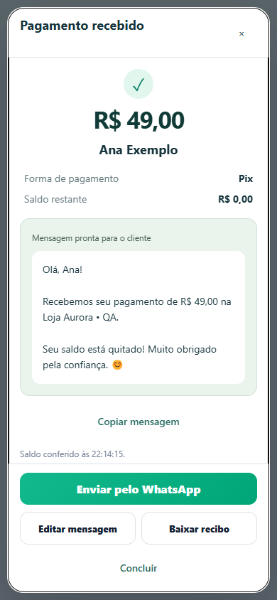
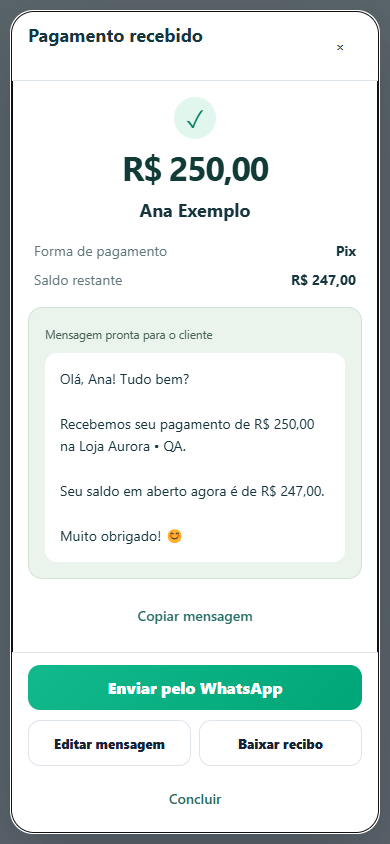
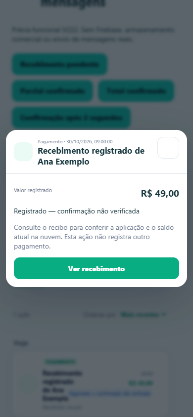
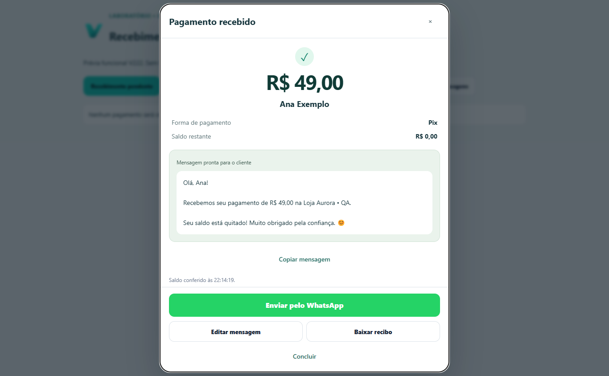

V222 — interface V221 preservada
Capturas reais do Chromium, somente dados fictícios. Nenhum pagamento ou envio comercial. Relatório e tempos medidos.

Recebimento confirmado · 390 px
Parcial R$250 · saldo R$247
Acesso direto pelo Histórico
Desktop · sem redesign